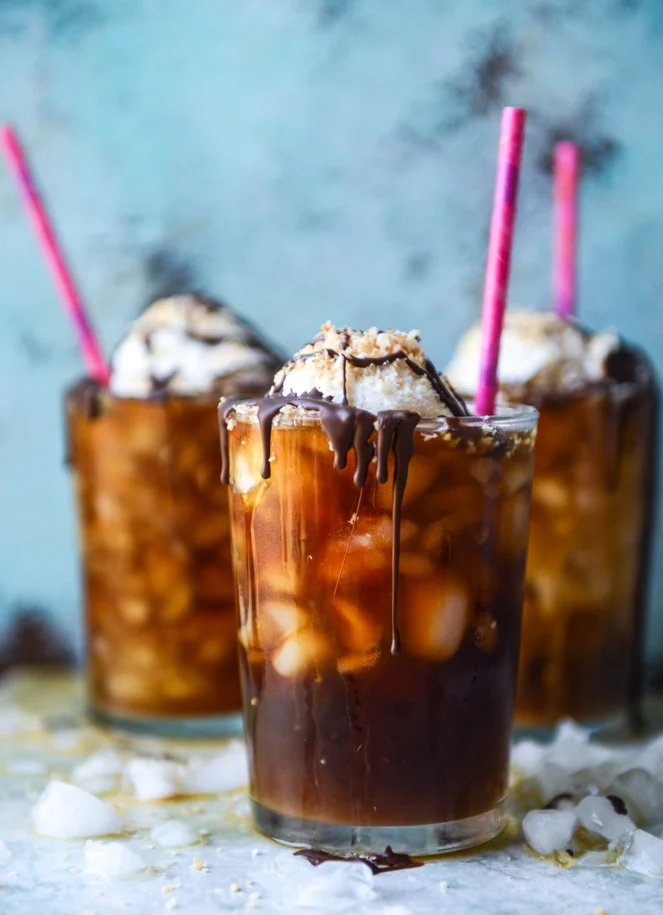

Ingredients
- 1 cup coarsely ground coffee beans
- 5 cups filtered water
- regular or crushed ice
- 2 shots espresso
- 1/4 cup club soda
- 1/4 cup vanilla ice cream
- melted chocolate for drizzling, if desired
- toasted coconut for topping, if desired
Instructions
- To make the cold brew, add the grounds to a large bowl or pitcher/container/jar. Add the water and stir to mix. Let this mixture sit overnight in the fridge. I have heard both ways: at room temperature and overnight. I prefer it from the fridge. (Also as a note, sometimes I made this in my french press too. I just don’t have a huge one.)
- The next morning, strain the coffee through a few layers of cheesecloth or a coffee filter. It’s key to reduce the granules.
- Fill a glass with crushed ice or coffee ice cubes (or omg, mind blown – crushed coffee ice cubes?) and pour your cold brew overtop, a little more than halfway. Add in the two shots of espresso. Add in the club soda and stir. Taste and see if it’s bubbly enough for you – if not, add a touch more!
- Scoop the ice cream on top and slightly push it down into the cold brew. At this point, you can drink it like this or swirl the ice cream until it melts. Or you can drizzle on a little chocolate and sprinkle some coconut!
